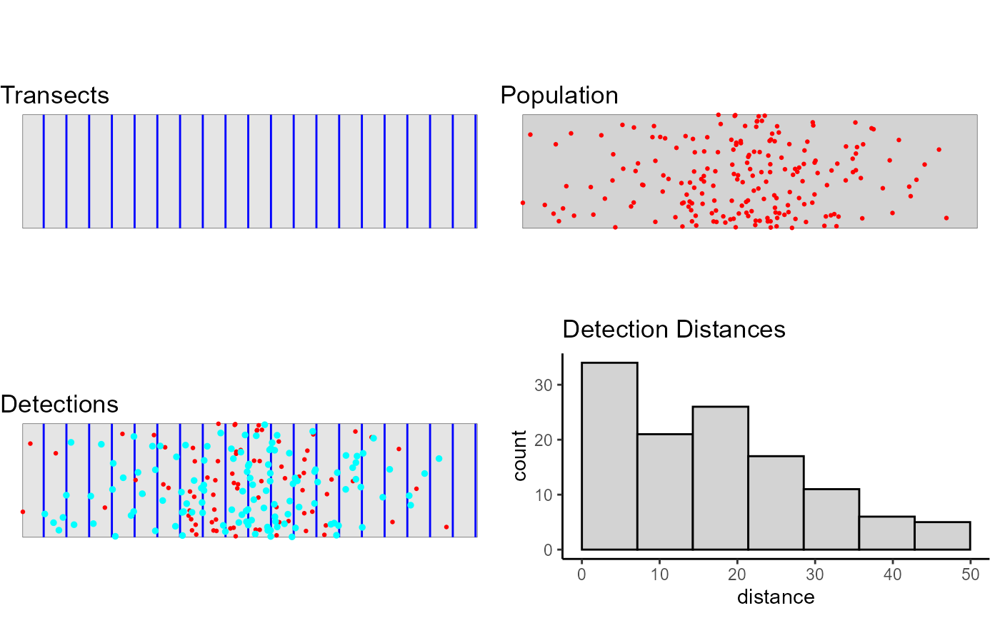

This creates a simulation with all the information necessary for dsims to generate a population, create transects, simulate the survey process and fit detection functions and estimate density / abundance. This function can be used by itself based on default values to create a simple line transect example, see Examples below. To create more complex simulations it is advisable to define the different parts of the simulation individually before grouping them together. See the Arguments for links to the functions which make the definitions for the individual simulation components. For a more in depth example please refer to the 'GettingStarted' vignette.
Usage
make.simulation(
reps = 10,
design = make.design(),
population.description = make.population.description(),
detectability = make.detectability(),
ds.analysis = make.ds.analysis()
)Arguments
- reps
number of times the simulation should be repeated
- design
an object of class Survey.Design created by a call to make.design
- population.description
an object of class Population.Description created by a call to make.population.description
- detectability
and object of class Detectability created by a call to make.detectability
- ds.analysis
an objects of class DS.Analysis created by a call to make.ds.analysis
Value
Simulation-class object
Details
The make.simulation function is now set up so that by
default (with the exception of specifying point transects rather than
line) it can run a simple simulation example. See examples.
Examples
# Create a basic rectangular study area
region <- make.region()
# Make a density grid (large spacing for speed)
density <- make.density(region = region,
x.space = 300,
y.space = 100,
constant = 1)
density <- add.hotspot(density, centre = c(1000, 100), sigma = 250, amplitude = 10)
# Define the population description
popdsc <- make.population.description(region = region,
density = density,
N = 200)
# Define the detecability
detect <- make.detectability(key.function = "hn",
scale.param = 25,
truncation = 50)
# Define the design
design <- make.design(region = region,
transect.type = "line",
design = "systematic",
samplers = 20,
design.angle = 0,
truncation = 50)
# Define the analyses
ds.analyses <- make.ds.analysis(dfmodel = ~1,
key = "hn",
truncation = 50,
criteria = "AIC")
# Put all the components together in the simulation (note no. of replicates
# reps = 1 is only for a single test run and should be 999 or more to be able
# to draw inference.)
simulation <- make.simulation(reps = 1,
design = design,
population.description = popdsc,
detectability = detect,
ds.analysis = ds.analyses)
# run an example survey to check the setup
survey <- run.survey(simulation)
plot(survey, region)

# Run the simulation
# Warning: if you have increased the number of replications then it can take a
# long time to run!
simulation <- run.simulation(simulation)
#>
1 out of 1 reps
summary(simulation)
#>
#> GLOSSARY
#> --------
#>
#> Summary of Simulation Output
#> ~~~~~~~~~~~~~~~~~~~~~~~~~~~~
#>
#> Region : the region name.
#> No. Repetitions : the number of times the simulation was repeated.
#> No. Excluded Repetitions : the number of times the simulation failed
#> (too few sightings, model fitting failure etc.)
#>
#> Summary for Individuals
#> ~~~~~~~~~~~~~~~~~~~~~~~
#>
#> Summary Statistics:
#> mean.Cover.Area : mean covered across simulation.
#> mean.Effort : mean effort across simulation.
#> mean.n : mean number of observed objects across
#> simulation.
#> mean.n.miss.dist: mean number of observed objects where no distance
#> was recorded (only displayed if value > 0).
#> no.zero.n : number of surveys in simulation where
#> nothing was detected (only displayed if value > 0).
#> mean.ER : mean encounter rate across simulation.
#> mean.se.ER : mean standard error of the encounter rates
#> across simulation.
#> sd.mean.ER : standard deviation of the encounter rates
#> across simulation.
#>
#> Estimates of Abundance:
#> Truth : true population size, (or mean of true
#> population sizes across simulation for Poisson N.
#> mean.Estimate : mean estimate of abundance across simulation.
#> percent.bias : the percentage of bias in the estimates.
#> RMSE : root mean squared error/no. successful reps
#> CI.coverage.prob : proportion of times the 95% confidence interval
#> contained the true value.
#> mean.se : the mean standard error of the estimates of
#> abundance
#> sd.of.means : the standard deviation of the estimates
#>
#> Estimates of Density:
#> Truth : true average density.
#> mean.Estimate : mean estimate of density across simulation.
#> percent.bias : the percentage of bias in the estimates.
#> RMSE : root mean squared error/no. successful reps
#> CI.coverage.prob : proportion of times the 95% confidence interval
#> contained the true value.
#> mean.se : the mean standard error of the estimates.
#> sd.of.means : the standard deviation of the estimates.
#>
#> Detection Function Values
#> ~~~~~~~~~~~~~~~~~~~~~~~~~
#>
#> mean.observed.Pa : mean proportion of individuals/clusters observed in
#> the covered region.
#> mean.estimte.Pa : mean estimate of the proportion of individuals/
#> clusters observed in the covered region.
#> sd.estimate.Pa : standard deviation of the mean estimates of the
#> proportion of individuals/clusters observed in the
#> covered region.
#> mean.ESW : mean estimated strip width.
#> sd.ESW : standard deviation of the mean estimated strip widths.
#>
#>
#> Region: region
#> No. Repetitions: 1
#> No. Excluded Repetitions: 0
#> Using only repetitions where all models converged.
#>
#> Design: Systematic parallel line design
#> design.type : Systematic parallel line design
#> bounding.shape : rectangle
#> samplers : 20
#> design.angle : 0
#> edge.protocol : minus
#>
#> Population Detectability Summary:
#> key.function = hn
#> scale.param = 25
#> truncation = 50
#>
#> Analysis Summary:
#> Candidate Models:
#> Model 1: key function 'hn', formula '~1', was selected 1 time(s).
#> criteria = AIC
#> variance.estimator = R2
#> truncation = 50
#>
#> Summary for Individuals
#>
#> Summary Statistics
#>
#> mean.Cover.Area mean.Effort mean.n mean.k mean.ER mean.se.ER sd.mean.ER
#> 1 1e+06 10000 116 20 0.0116 0.002630189 NA
#>
#> ~~~~~~~~~~~~~~~~~~~~~~~~~~~~~~~~~~~~~~~~
#> Estimates of Abundance (N)
#>
#> Truth mean.Estimate percent.bias RMSE CI.coverage.prob mean.se sd.of.means
#> 1 200 180.93 -9.54 19.07 1 43.3 NA
#>
#> ~~~~~~~~~~~~~~~~~~~~~~~~~~~~~~~~~~~~~~~~
#> Estimates of Density (D)
#>
#> Truth mean.Estimate percent.bias RMSE CI.coverage.prob mean.se
#> 1 2e-04 0.0001809257 -9.537164 1.907433e-05 1 4.329508e-05
#> sd.of.means
#> 1 NA
#>
#> ~~~~~~~~~~~~~~~~~~~~~~~~~~~~~~~~~~~~~~~~
#> ~~~~~~~~~~~~~~~~~~~~~~~~~~~~~~~~~~~~~~~~
#>
#> Detection Function Values
#>
#> mean.observed.Pa mean.estimate.Pa sd.estimate.Pa mean.ESW sd.ESW
#> 1 0.58 0.64 NA 32.06 NA
# For a more in depth example please look at
vignette("GettingStarted", 'dsims')
#> Warning: vignette 'GettingStarted' not found